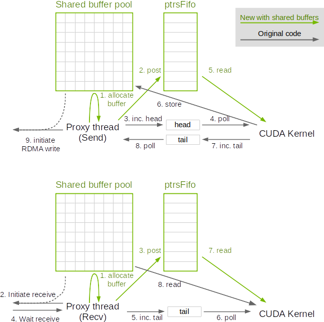

As we scale, we will have more peers than we can process in parallel. Therefore we will not use all buffers concurrently. For peers which we communicate to and which we didn't allocate a FIFO for collective operations (e.g. allreduce), we do not allocate additional memory, but instead allocate a pool of network buffers.
This is only true for network communication; we still allocate buffers normally for intra-node communication.
When a communication operation occurs, the CPU proxy thread will allocate a buffer from the pool, and pass it to the CUDA kernel through a new "ptrsFifo".
When sending data, the sender proxy will start with a negative head (=credit) so that the GPU will have to wait until the proxy thread allocates data, writes the pointer to the fifo, then increases the head (returns one credit) to unblock the GPU.
On the receiving side, the receiving proxy will write allocate a buffer, receive data into it, and write that pointer to the fifo before increasing the tail.
Note this is adding an extra step in the protocol, meaning GPUs cannot start sending right away as they need to wait for the send proxy to provide a buffer. However, performance degradation was never observed when using shared buffers, which tends to indicate that by the time the CUDA kernel starts, proxy threads had enough time to post buffers. Also reading the pointer from sysmem could cause a latency increase. This is only for the Simple protocol however which already has a significant latency.

Connection have a new ptrsFifo field which CUDA kernels may use in send/receive operations.
Memory is now allocated only once and using a constant size.
Author : Sylvain Jeaugey